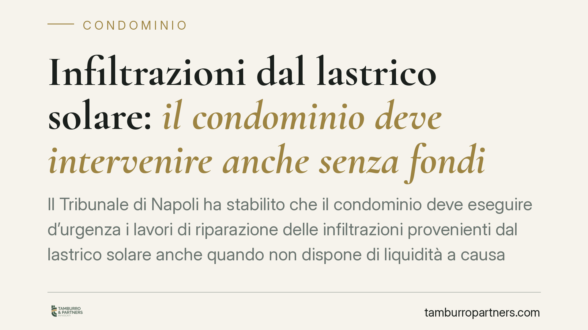

Infiltrazioni dal lastrico solare: il condominio deve intervenire anche senza fondi
Il Tribunale di Napoli ha stabilito che il condominio deve eseguire d'urgenza i lavori di riparazione delle infiltrazioni provenienti dal lastrico solare anche quando non dispone di liquidità a causa della morosità dei condomini. La mancanza di fondi non è una giustificazione valida di fronte a un danno imminente per la salute e l'abitabilità. Vediamo perché la decisione conta e cosa può fare chi subisce il danno.

Il caso
Un proprietario dell'ultimo piano lamentava infiltrazioni ricorrenti provenienti dal lastrico solare condominiale. Nonostante le ripetute segnalazioni, i lavori non venivano avviati: il condominio opponeva la mancanza di fondi, dovuta alla morosità di alcuni partecipanti.
Il proprietario si è rivolto al giudice chiedendo un provvedimento d'urgenza. Il Tribunale di Napoli, Sezione X Civile, ha accolto la domanda, ordinando l'esecuzione immediata degli interventi di riparazione e respingendo la giustificazione finanziaria addotta dal condominio.
Inquadramento normativo
La pronuncia poggia su due pilastri.
Il primo è l'art. 2051 c.c. (danno da cose in custodia): il condominio è custode delle parti comuni, tra cui rientra il lastrico solare quando svolge funzione di copertura dell'edificio. In quanto custode risponde dei danni che la cosa provoca a terzi, salvo prova del caso fortuito. La morosità interna non integra il caso fortuito, perché è un fatto riconducibile all'organizzazione del condominio e non a un evento imprevedibile ed esterno.
Il secondo è l'art. 700 c.p.c., che consente di chiedere un provvedimento cautelare "atipico" quando ricorrono due condizioni: il *fumus boni iuris* (l'apparente fondatezza del diritto) e il *periculum in mora* (il rischio di un pregiudizio grave e irreparabile nel tempo necessario a un giudizio ordinario). Nel caso delle infiltrazioni, il periculum è individuato nel danno alla salubrità dell'abitazione e, potenzialmente, alla salute di chi vi risiede.
Perché i fondi non contano
Il punto centrale della decisione è questo: l'obbligo di conservare le parti comuni e di eliminare le fonti di danno è un obbligo di risultato, non condizionato alla disponibilità di cassa.
La morosità di alcuni condomini è un problema interno, che il condominio deve risolvere con gli strumenti propri: decreto ingiuntivo verso i morosi, anticipazioni, ricorso a finanziamenti o riparto straordinario. Non è un problema che possa essere "scaricato" sul condomino danneggiato, costringendolo a convivere con l'infiltrazione finché non si ricompone l'equilibrio finanziario.
In altre parole: tra l'interesse del condominio a non spendere e il diritto del singolo all'integrità del proprio immobile e alla salute, prevale il secondo.
Implicazioni pratiche
Per chi abita l'ultimo piano o comunque subisce infiltrazioni dalle parti comuni, la decisione rafforza una tutela concreta e rapida. Non è necessario attendere un giudizio ordinario, spesso lungo: il procedimento d'urgenza ex art. 700 c.p.c. permette di ottenere in tempi brevi l'ordine di esecuzione dei lavori.
Per l'amministratore, invece, l'avvertimento è chiaro. Di fronte a una segnalazione di infiltrazioni con rischio per la salubrità, l'inerzia espone il condominio a responsabilità e a condanne alle spese. L'amministratore deve attivarsi anche in autonomia, nei limiti degli atti conservativi urgenti che la legge gli consente, convocando tempestivamente l'assemblea e documentando le iniziative assunte.
Resta ferma la successiva questione del riparto delle spese tra proprietario del lastrico e condominio, regolata da criteri specifici: ma quella è una partita che si gioca dopo, senza poter ritardare l'intervento.
Cosa fare in concreto
- Documentate il danno con fotografie datate, eventuale relazione di un tecnico e segnalazioni scritte all'amministratore (via PEC o raccomandata), così da fissare la data della richiesta.
- Diffidate formalmente il condominio a eseguire i lavori entro un termine ragionevole, richiamando l'obbligo di conservazione delle parti comuni.
- Valutate il ricorso d'urgenza ex art. 700 c.p.c. se l'inerzia persiste e il danno rischia di aggravarsi: è lo strumento più rapido per ottenere l'ordine di intervento.
- Conservate le prove del pregiudizio (danni all'immobile, costi sostenuti, condizioni di insalubrità) in vista di un'eventuale richiesta di risarcimento ai sensi dell'art. 2051 c.c.
- Se siete amministratori, non opponete la morosità: attivate il recupero crediti verso i condomini inadempienti e procedete comunque con gli interventi urgenti.
Disclaimer
Contributo informativo a cura di Tamburro & Partners - Avv. Giuseppe Tamburro. Non costituisce parere legale.
Ogni condominio ha una storia a sé.
Se gestisci un'amministrazione e vuoi un confronto su una specifica questione condominiale, scrivi allo studio. Ti rispondiamo entro un giorno lavorativo.